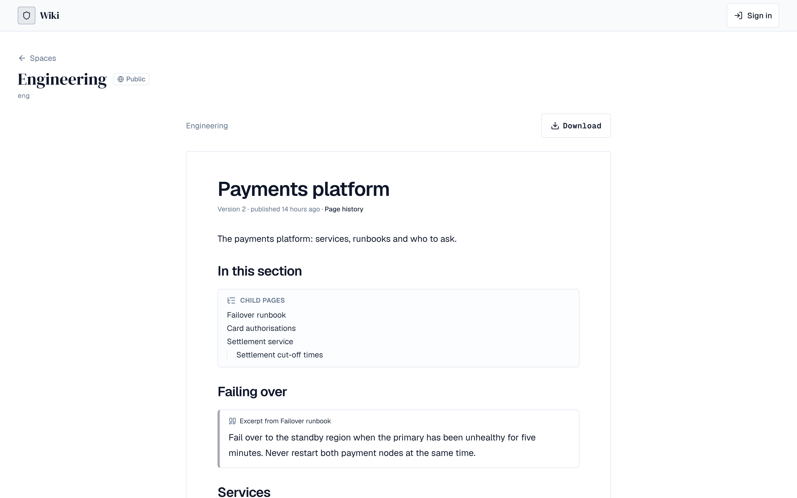
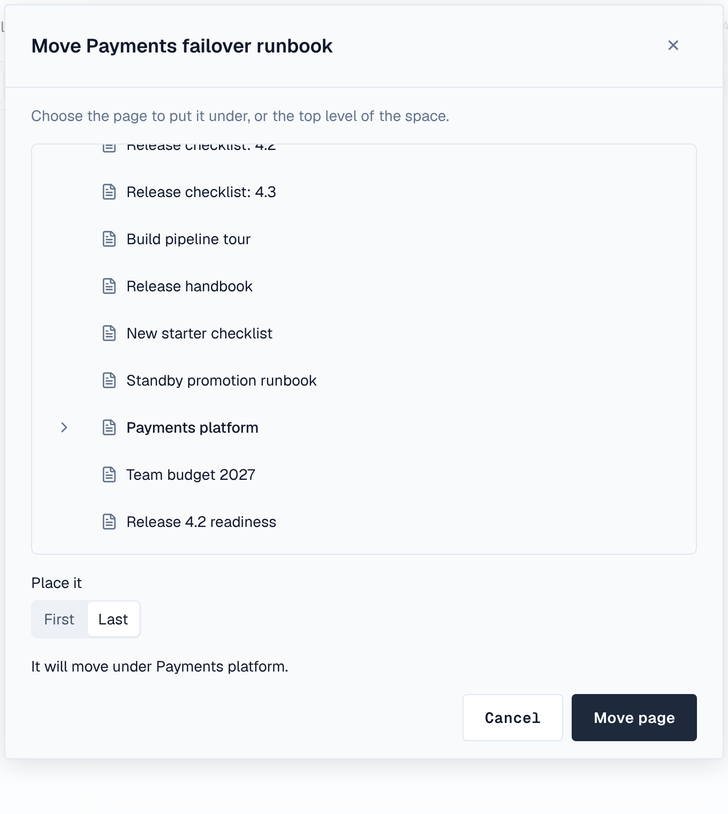
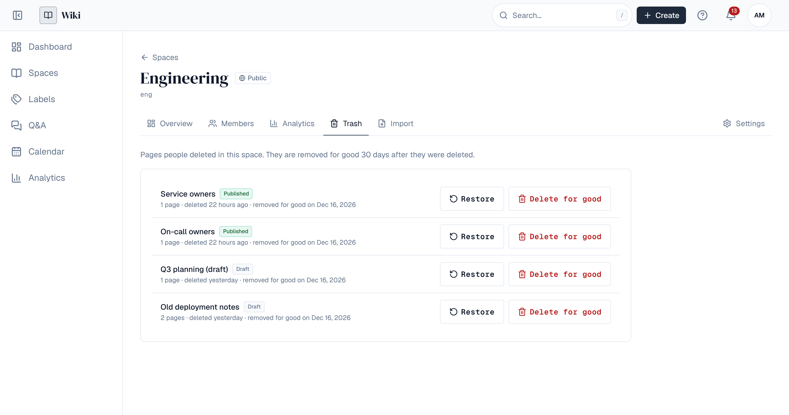

1. Reading a page
Open a page from the space's page tree, a link or search. Readers see the page's last published version: its title, when it last changed, the content, and at the bottom the pages under it, "Was this page helpful?", labels and comments.

At the top of the page, Download saves it as a Word document or PDF (Import and export), Copy makes a copy (Copies and templates) and Watch sends you alerts when it changes (Profile and notifications). Page history shows its published versions (Page history and versions).
2. The page tree
The left side of a space lists its pages as a tree. The arrow next to a page shows or hides the pages under it. Readers see published pages only; editors see every page, with a badge for drafts and pages in review.
- A page can be at most 100 levels deep.
- Titles are unique within a space: two pages can't share a title (case is ignored).
- Editors can move a page up or down among its neighbours with the buttons next to it in the tree.
3. Creating a page
- In the space, choose New page above the tree (a top-level page), or Add a page on a page (a page under it).
- Enter the Title. Under Start from, keep Empty page or pick a template: one of the space's or one from the library. A template can create a whole tree of pages. See Copies and templates.
- Create page (or Create 6 pages for a template with pages). The page opens in the editor.
- Write the page, then select Publish so readers can see it.
A new page starts as a draft: only people who can edit pages in the space see it until it is published. See Drafts and publishing.
4. Page status
| Status | Who sees it |
|---|---|
| Draft | Editors of the space only |
| In review | Editors of the space only; see Reviews |
| Published | Everyone who can read the space |
| Archived | Editors of the space only |
Editors change it with Status in the page's side panel. So that readers never meet a page whose parent they can't see, a page can only be published under published pages, and a page with published pages under it can't be taken back to draft until they are.
5. Moving a page
- Open the page as an editor and choose Move.
- Pick the page to put it under, or Top level of the space.
- Under Place it, choose First or Last among its new neighbours, then Move page.

The pages under it move with it. A page can't go under itself or one of its own pages, and a published page can only go under a published page. Its address stays the same.
6. Deleting and the trash
Delete on a page moves it, and every page under it, to the space's trash. The Trash tab of the space lists them, with when they were deleted and when they will be removed for good.

- Pages stay in the trash for 30 days, then they are removed for good.
- Restore puts a page back under its old parent, or at the top level if that parent is gone or no longer published. It fails if another page took its title meanwhile: rename that page first.
- Delete for good removes it at once. It needs the space's Admin role and can't be undone.
- Only people who can edit pages in the space see its trash.